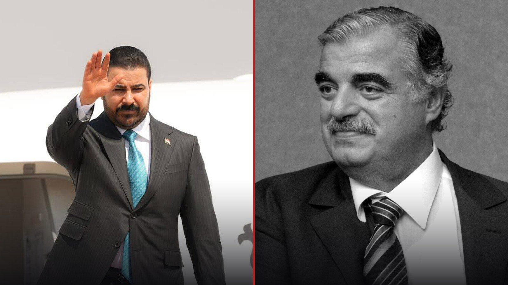

On 14 February 2005, a truck bomb on the Beirut seafront tore through Rafic Hariri’s motorcade.1 Hariri had risen from business and construction to the premiership, rebuilt a Lebanon shattered by war, and in the final months of his life had edged towards a red line: Syria’s military presence and weapons held outside the state. What is often forgotten is that Hariri was no longer prime minister when he was killed; he had stepped down in October 2004.2 He became a target at the moment he stopped being a tolerable partner and became a threat to the prevailing order.
Twenty-one years later, in Baghdad, another man with a strikingly similar profile sits in the prime minister’s chair.
A Businessman with No Political Record
Ali Falih al-Zaidi, a lawyer and businessman, took office after the Iraqi parliament gave him its vote of confidence on 14 May 2026.3 He had previously chaired the board of Al-Janoob Islamic Bank. He was known for investments in banking and for supplying the state’s food-basket programme, and he had never held political office.4 The youngest prime minister in Iraq’s history was meant to be a safe, technocratic manager: a compromise candidate agreed upon by the Coordination Framework after months of wrangling.5
What we have seen in recent months is not the picture of a safe manager.
A Sentence That Cannot Be Taken Back
In August 2026, al-Zaidi declared publicly that he would not retreat on bringing all weapons under state control:
“I will press on with this confrontation, even if it costs me my life.”6
The statement was read as a direct message to the armed factions backed by “Big Brother”. He ordered a draft law to be prepared, and his government set 30 September as the decisive deadline.6
Politicians in the region rarely say such a thing, and more rarely still say it twice. When a prime minister speaks openly about the possibility of being killed, he either takes the threat seriously or wants to raise the price of removing him for his opponents. Perhaps both.
The Second Front: Money
Weapons are not the only red line. In Iraq, guns and money are two sides of the same coin; for years the factions have drawn part of their power from influence over ministries, contracts and border crossings. And al-Zaidi has put his hand on that artery.
On 28 June 2026, in coordination with the security services and the Supreme Judicial Council, he launched an operation called “Sawlat al-Fajr” (Dawn Strike), in which around 50 people were arrested on corruption charges.7 The campaign targeted political figures and officials in the oil and electricity ministries on charges of embezzling public funds and money laundering8 — precisely the two ministries where the largest contracts and the most lucrative networks of influence have taken root.
The timing was telling. Abbas Araghchi, foreign minister of “Big Brother”, was holding talks with Iraqi officials in Baghdad at the very moment the wave of arrests was under way.9 Al-Zaidi did not back down. He said his government would not turn back from this path however great the challenges or the pressure became. He went further still, promising citizens a substantial share of recovered assets in return for reporting corruption.10
Warnings have come from within Iraq’s own political class. Ali Allawi, a former finance minister, has said the campaign could face political risks, because centres of influence and power will react.10 In the months that followed, the campaign reached the factions themselves: the intelligence chief of al-Nujaba in Dhi Qar was arrested by counter-terrorism forces. The movement, among the most determined opponents of handing over weapons, called it a dangerous escalation and issued a warning to the prime minister.7
Here, too, Hariri’s shadow is visible. His reconstruction of Lebanon, without his intending it, collided with the economic interests of networks that profited from Syria’s presence in the country. A leader who targets both the weapons and the money behind them does not make two enemies; he makes one enemy with twice the motive.
Caught Between Two Powers
Hariri was caught between Damascus and Riyadh. Al-Zaidi is caught between Washington and “Big Brother”.
Last week, that rift reached the skies. The airports of Najaf, Baghdad, Basra, Erbil and Sulaymaniyah halted flights to and from Iran, and Najaf airport’s management said the decision followed instructions from the highest levels of government.11 Iraq is enforcing the ban in line with US sanctions on Iranian airlines.12 For “Big Brother”, whose pilgrims and travellers had for years landed at Iraqi airports without difficulty, the message was unmistakable. Iraqi factions immediately sharpened their rhetoric against the ban.13
At the same time, al-Zaidi tried not to close the other door: his government announced it was in direct talks with Washington to exempt some airports from the ban on humanitarian grounds, including medical treatment, study and pilgrimage.14 This is the same balancing act Hariri performed for years, until the day it was no longer possible.
The Similarities, and the Decisive Difference
The similarities are plain: a businessman from outside the political class, a country scarred by war, weapons outside the state backed by a regional power, and pressure from a Western power to disarm them. UN Security Council Resolution 1559 of September 2004, which called for the withdrawal of foreign forces and the disarmament of Lebanon’s militias, was adopted five months before Hariri’s assassination.15 Al-Zaidi’s 30 September deadline belongs to the same family.
But there is a fundamental difference. Hariri came from outside the “Axis of Resistance”. Al-Zaidi came from within it; he was brought to power by the very coalition in which the factions’ political wings sit. That is both his shield and his cage. In July, at a meeting of the Coordination Framework, he threatened to resign in protest over corruption cases and the weapons file.16 A prime minister who threatens to leave from inside the house is telling us the house is no longer safe.
An Atmosphere Growing Heavier
In recent months, numerous warnings have been published about the possibility that al-Zaidi could be targeted over his disarmament plan, alongside calls to reinforce security at the government palace.17 Arab broadcasters have spoken of an “American-Iranian battle” and of fears that he could be assassinated.18 Some of this is speculation, but speculation takes shape only when the ground has been prepared for it.
Answering the Question
Does Hariri’s fate await al-Zaidi? No fate is written in advance. Al-Zaidi can still find a third way: gradual, negotiated disarmament that keeps Washington satisfied without backing “Big Brother” into a corner. He himself has said he has no intention of a military confrontation with the factions and that dialogue continues.19
Yet the region’s history holds a bitter lesson: the danger peaks when a leader turns from a “tolerable partner” into an “intolerable obstacle”. Hariri crossed that line in the autumn of 2004. Al-Zaidi — with his 30 September deadline, a campaign that has reached the factions’ financial arteries, and Iraq’s skies closed to “Big Brother” — has arrived at the same line.
The real question is not whether al-Zaidi will become Iraq’s Hariri. It is whether Baghdad, unlike Beirut, can protect a man who has staked his life on it.
— Reza Mir, London, 26 September 2026
Sources
- Wikipedia, “Assassination of Rafic Hariri” — en.wikipedia.org
- Wikipedia, “Rafic Hariri” — en.wikipedia.org
- Al Jazeera, “Iraq’s parliament approves new Ali al-Zaidi government”, 14 May 2026 — aljazeera.com
- Al-Ghad, “Who is Ali al-Zaidi, Iraq’s new prime minister?” (Arabic) — alghad.tv
- Al Jazeera Net, “Who is Ali al-Zaidi, tasked with forming Iraq’s government?” (Arabic), 28 April 2026 — aljazeera.net
- Sabq, “Iraq’s prime minister: I will press on with confining weapons to the state even if it costs me my life” (Arabic), 17 August 2026 — sabq.org
- Al-Araby Al-Jadeed, “100 days of the al-Zaidi government” (Arabic), 21 August 2026 — alaraby.co.uk
- “The war on corruption in Iraq leads to powerful names” (Arabic), 30 June 2026 — aajeg.com
- Monte Carlo Doualiya, “Iraq: number arrested in anti-corruption campaign rises to 67” (Arabic), 29 June 2026 — mc-doualiya.com
- Arabi21, “After the anti-corruption campaign: can al-Zaidi break the immunity of the corrupt?” (Arabic), 10 August 2026 — arabi21.com
- Al-Quds, “Iraq suspends Iran flights” (Arabic), September 2026 — alquds.com
- Asharq Al-Awsat, “Iraq will enforce ban on Iranian airlines in compliance with US sanctions” (Arabic), September 2026 — aawsat.com
- “Iraqi factions escalate against the Iranian flight ban” (Arabic), September 2026 — aajsa.com
- Times of Egypt, “Iraq seeks to exempt some of its airports from the ban on Iranian airlines” (Arabic), 26 September 2026 — timesofegypt.com
- Wikipedia, “United Nations Security Council Resolution 1559” — en.wikipedia.org
- Al-Araby TV, “Over corruption and weapons: al-Zaidi hints at resigning” (Arabic), 31 July 2026 — alaraby.com
- Al-Saa Network, “Fears of al-Zaidi’s assassination: multiple warnings” (Arabic), 24 July 2026 — nabd.com
- Al-Hadath, “An American-Iranian battle: fears of al-Zaidi’s assassination in Iraq” (Arabic), 16 July 2026 — alhadath.net
- Arabic Wikipedia, “Ali Falih al-Zaidi”, citing Al Jazeera Net, 25 August 2026 — ar.wikipedia.org
في الرابع عشر من فبراير/شباط ٢٠٠٥، مزّقت شاحنة مفخخة على كورنيش بيروت موكب رفيق الحريري.١ كان الحريري قد صعد من عالم التجارة والمقاولات إلى رئاسة الحكومة، وأعاد بناء لبنان الذي دمّرته الحرب، واقترب في أشهره الأخيرة من خطٍّ أحمر: الوجود العسكري السوري والسلاح الخارج عن سلطة الدولة. وما يُنسى غالباً أن الحريري لم يكن رئيساً للوزراء حين اغتيل؛ فقد استقال في أكتوبر/تشرين الأول ٢٠٠٤.٢ لقد صار هدفاً في اللحظة التي تحوّل فيها من شريكٍ يمكن احتماله إلى تهديدٍ للنظام المهيمن.
بعد واحدٍ وعشرين عاماً، وفي بغداد، يجلس على كرسي رئاسة الوزراء رجلٌ آخر بسيرةٍ شبيهة إلى حدٍّ لافت.
رجل أعمال بلا سجلّ سياسي
تولّى علي فالح الزيدي، المحامي ورجل الأعمال، رئاسة الحكومة بعد أن منحه مجلس النواب العراقي الثقة في ١٤ مايو/أيار ٢٠٢٦،٣ وكان قبل ذلك رئيساً لمجلس إدارة مصرف الجنوب الإسلامي. عُرف باستثماراته في القطاع المصرفي وفي توريد مواد السلة الغذائية الحكومية، ولم يسبق له أن شغل أي منصب سياسي.٤ كان يُفترض بأصغر رئيس وزراء في تاريخ العراق أن يكون مديراً تكنوقراطياً لا يشكّل خطراً على أحد؛ مرشّحَ تسويةٍ اتفق عليه «الإطار التنسيقي» بعد أشهر من التجاذب.٥
لكنّ ما شهدناه في الأشهر الأخيرة ليس صورة مديرٍ لا يشكّل خطراً.
جملة لا يمكن التراجع عنها
في أغسطس/آب ٢٠٢٦، أعلن الزيدي صراحةً أنه لن يتراجع في ملف حصر السلاح بيد الدولة:
«أمضي بالمواجهة حتى إذا كلّفني ذلك حياتي.»٦
قُرئ هذا الموقف رسالةً مباشرة إلى الفصائل المسلحة المدعومة من «الأخ الأكبر». ووجّه الزيدي بإعداد مشروع قانون، فيما حدّدت حكومته ٣٠ سبتمبر/أيلول موعداً حاسماً.٦
نادراً ما يقول سياسيو المنطقة جملةً كهذه، وأندر من ذلك أن يقولوها مرتين. فحين يتحدث رئيس وزراء علناً عن احتمال مقتله، فإمّا أنه يأخذ التهديد على محمل الجدّ، وإمّا أنه يريد رفع كلفة إزاحته على خصومه. وربما الأمران معاً.
الجبهة الثانية: المال
السلاح ليس الخطّ الأحمر الوحيد. ففي العراق، السلاح والمال وجهان لعملة واحدة؛ إذ تستمدّ الفصائل منذ سنوات جزءاً من قوتها من النفوذ داخل الوزارات والعقود والمنافذ الحدودية. وقد مدّ الزيدي يده إلى هذا الشريان تحديداً.
في ٢٨ يونيو/حزيران ٢٠٢٦، أطلق بالتنسيق مع الأجهزة الأمنية ومجلس القضاء الأعلى حملة «صولة الفجر»، التي اعتُقل خلالها نحو ٥٠ شخصاً بتهم فساد.٧ واستهدفت الحملة شخصيات سياسية ومسؤولين في وزارتي النفط والكهرباء بتهم سرقة المال العام وغسل الأموال،٨ أي تحديداً الوزارتين اللتين ترسّخت فيهما أكبر العقود وأكثر شبكات النفوذ ربحاً.
والتوقيت بليغ الدلالة أيضاً: فقد كان عباس عراقجي، وزير خارجية «الأخ الأكبر»، يجري محادثات مع المسؤولين العراقيين في بغداد بالتزامن مع موجة الاعتقالات.٩ ولم يتراجع الزيدي؛ بل أكّد أن حكومته لن تحيد عن هذا النهج مهما بلغت التحديات أو تعاظمت الضغوط. وذهب أبعد من ذلك، فوعد المواطنين بنسبةٍ مجزية من الأموال المستردّة مقابل الإبلاغ عن الفساد.١٠
وجاءت التحذيرات من داخل الطبقة السياسية العراقية نفسها. فقد رأى وزير المالية الأسبق علي علاوي أن الحملة قد تواجه مخاطر سياسية، لأن مراكز النفوذ والقوة ستردّ.١٠ وفي الأشهر التالية، طالت الحملة الفصائل ذاتها: إذ اعتقلت قوة من جهاز مكافحة الإرهاب مسؤول الاستخبارات في حركة «النجباء» في ذي قار، فاعتبرت الحركة — وهي من أشدّ الرافضين لتسليم السلاح — ذلك «تصعيداً خطيراً» وتوعّدت رئيس الوزراء.٧
وهنا أيضاً يلوح ظلّ الحريري. فقد اصطدم إعماره للبنان، من دون أن يقصد، بالمصالح الاقتصادية لشبكاتٍ كانت تنتفع من الوجود السوري في البلاد. والزعيم الذي يستهدف السلاح والمال الذي يقف خلفه معاً لا يصنع عدوّين، بل يصنع عدوّاً واحداً بدافعٍ مضاعف.
بين قوّتين
كان الحريري عالقاً بين دمشق والرياض. والزيدي عالقٌ بين واشنطن و«الأخ الأكبر».
في الأسبوع الماضي، بلغ هذا الشرخ السماء. فقد أوقفت مطارات النجف وبغداد والبصرة وأربيل والسليمانية الرحلات من إيران وإليها، وأعلنت إدارة مطار النجف أن القرار جاء بناءً على تعليمات عليا من الجهات المختصة في الحكومة.١١ ويطبّق العراق هذا الحظر امتثالاً للعقوبات الأمريكية على شركات الطيران الإيرانية.١٢ وبالنسبة إلى «الأخ الأكبر»، الذي اعتاد زوّاره ومسافروه لسنوات الهبوط في المطارات العراقية بلا عناء، كانت الرسالة واضحة. وسرعان ما صعّدت الفصائل العراقية لهجتها ضد الحظر.١٣
وفي الوقت نفسه، حرص الزيدي على ألّا يغلق الباب الآخر: فقد أعلنت حكومته أنها تجري حواراً مباشراً مع الجانب الأمريكي لاستثناء بعض المطارات من الحظر لدواعٍ إنسانية تتعلق بالعلاج والدراسة والزيارات الدينية.١٤ إنها لعبة التوازن ذاتها التي أدّاها الحريري لسنوات، إلى أن جاء يومٌ لم تعد فيه ممكنة.
أوجه الشبه والفارق الحاسم
أوجه الشبه واضحة: رجل أعمال من خارج الطبقة السياسية، وبلدٌ مثخن بجراح الحرب، وسلاحٌ خارج الدولة تسنده قوة إقليمية، وضغطٌ من قوة غربية لنزعه. فقد صدر قرار مجلس الأمن رقم ١٥٥٩ في سبتمبر/أيلول ٢٠٠٤، مطالباً بانسحاب القوات الأجنبية ونزع سلاح الميليشيات في لبنان، قبل خمسة أشهر من اغتيال الحريري.١٥ وموعد الزيدي في ٣٠ سبتمبر من الطينة نفسها.
لكنّ ثمة فارقاً جوهرياً. فالحريري جاء من خارج «محور المقاومة»، أمّا الزيدي فجاء من داخله؛ إذ أوصله إلى السلطة الائتلافُ نفسه الذي تجلس فيه الأذرع السياسية للفصائل. وهذا درعه وقفصه في آنٍ واحد. ففي يوليو/تموز، لوّح بالاستقالة خلال اجتماعٍ للإطار التنسيقي احتجاجاً على ملفات الفساد والسلاح.١٦ ورئيس الوزراء الذي يهدّد بالرحيل من داخل البيت يقول لنا إن البيت لم يعد آمناً.
أجواء تزداد ثقلاً
في الأشهر الأخيرة، نُشرت تحذيرات عديدة من احتمال استهداف الزيدي بسبب خطة حصر السلاح، ترافقت مع دعوات إلى تعزيز حماية القصر الحكومي.١٧ وتحدّثت قنوات عربية عن «معركة أميركية إيرانية» ومخاوف من اغتياله.١٨ بعض ذلك تكهّنات، لكنّ التكهّنات لا تتشكّل إلا حين تكون الأرض ممهّدة لها.
الإجابة عن السؤال
هل ينتظر الزيديَّ مصيرُ الحريري؟ لا مصير مكتوباً سلفاً. لا يزال بإمكان الزيدي أن يجد طريقاً ثالثاً: نزع سلاحٍ تدريجي ومتفاوَض عليه، يُرضي واشنطن من دون أن يحشر «الأخ الأكبر» في الزاوية. وقد قال بنفسه إنه لا ينوي الصدام العسكري مع الفصائل وإن الحوار مستمر.١٩
غير أن تاريخ المنطقة يحمل درساً مريراً: يبلغ الخطر ذروته حين يتحوّل الزعيم من «شريكٍ يمكن احتماله» إلى «عقبةٍ لا تُحتمل». لقد عبر الحريري هذا الخط في خريف ٢٠٠٤. أمّا الزيدي — بموعده في ٣٠ سبتمبر، وحملته التي بلغت الشرايين المالية للفصائل، وإغلاق أجواء العراق أمام «الأخ الأكبر» — فقد وصل إلى الخطّ ذاته.
السؤال الحقيقي ليس ما إذا كان الزيدي سيصبح حريري العراق، بل ما إذا كانت بغداد، خلافاً لبيروت، قادرةً على حماية رجلٍ جعل حياته رهناً لهذه المعركة.
— رضا مير، لندن، ٢٦ سبتمبر ٢٠٢٦
المصادر
- ويكيبيديا (بالإنجليزية)، «Assassination of Rafic Hariri» — en.wikipedia.org
- ويكيبيديا (بالإنجليزية)، «Rafic Hariri» — en.wikipedia.org
- الجزيرة الإنجليزية، «Iraq’s parliament approves new Ali al-Zaidi government»، ١٤ مايو ٢٠٢٦ — aljazeera.com
- الغد، «من هو علي الزيدي رئيس الوزراء العراقي الجديد؟» — alghad.tv
- الجزيرة نت، «من هو علي الزيدي المكلف برئاسة الحكومة العراقية؟»، ٢٨ أبريل ٢٠٢٦ — aljazeera.net
- سبق، «رئيس وزراء العراق: سأمضي في حصر السلاح حتى لو كلّفني حياتي»، ١٧ أغسطس ٢٠٢٦ — sabq.org
- العربي الجديد، «100 يوم على حكومة الزيدي.. ملفات ثقيلة من سلاح الفصائل إلى الفساد»، ٢١ أغسطس ٢٠٢٦ — alaraby.co.uk
- «الحرب على الفساد في العراق تقود إلى أسماء نافذة»، ٣٠ يونيو ٢٠٢٦ — aajeg.com
- مونت كارلو الدولية، «العراق: ارتفاع عدد المعتقلين في حملة مكافحة الفساد إلى 67»، ٢٩ يونيو ٢٠٢٦ — mc-doualiya.com
- عربي21، «بعد حملة مكافحة الفساد.. هل ينجح الزيدي في كسر حصانة الفاسدين؟»، ١٠ أغسطس ٢٠٢٦ — arabi21.com
- القدس، «العراق يوقف رحلات إيران ومحمد مخبر يهدد بحظر جوي إقليمي»، سبتمبر ٢٠٢٦ — alquds.com
- الشرق الأوسط، «العراق سينفّذ حظر شركات الطيران الإيرانية امتثالاً للعقوبات الأميركية»، سبتمبر ٢٠٢٦ — aawsat.com
- «الفصائل العراقية تصعّد ضد حظر الطيران الإيراني: المطارات في الواجهة»، سبتمبر ٢٠٢٦ — aajsa.com
- Times of Egypt، «العراق يسعى إلى استثناء بعض مطاراته من منع رحلات شركات الطيران الإيرانية»، ٢٦ سبتمبر ٢٠٢٦ — timesofegypt.com
- ويكيبيديا (بالإنجليزية)، «United Nations Security Council Resolution 1559» — en.wikipedia.org
- التلفزيون العربي، «"بسبب الفساد والسلاح".. الزيدي يلوّح بالاستقالة من رئاسة الحكومة العراقية»، ٣١ يوليو ٢٠٢٦ — alaraby.com
- شبكة الساعة، «مخاوف من اغتيال الزيدي.. تحذيرات متعددة ودعوات لتعزيز حماية القصر الحكومي»، ٢٤ يوليو ٢٠٢٦ — nabd.com
- الحدث، «ساعة حوار | معركة أميركية إيرانية.. مخاوف من اغتيال الزيدي في العراق»، ١٦ يوليو ٢٠٢٦ — alhadath.net
- ويكيبيديا، «علي فالح الزيدي»، نقلاً عن الجزيرة نت، ٢٥ أغسطس ٢٠٢٦: «الزيدي: لا نية لصدام عسكري مع الفصائل والحوار مستمر لحصر السلاح» — ar.wikipedia.org